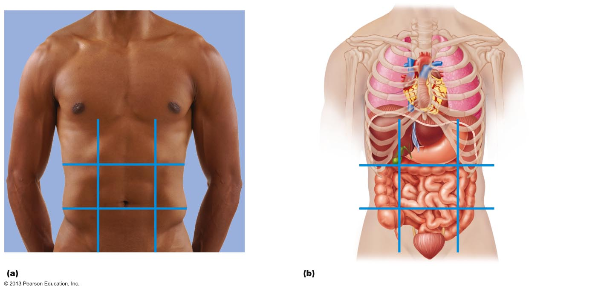
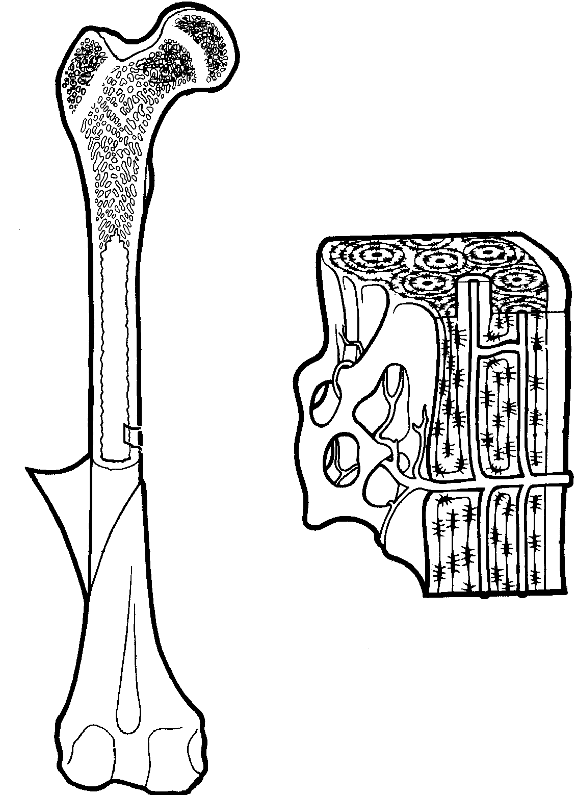
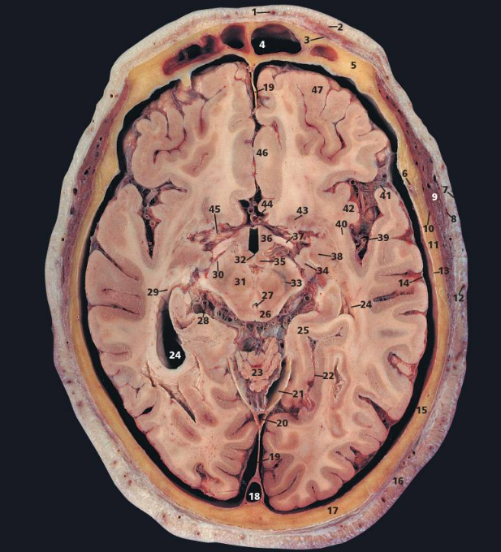
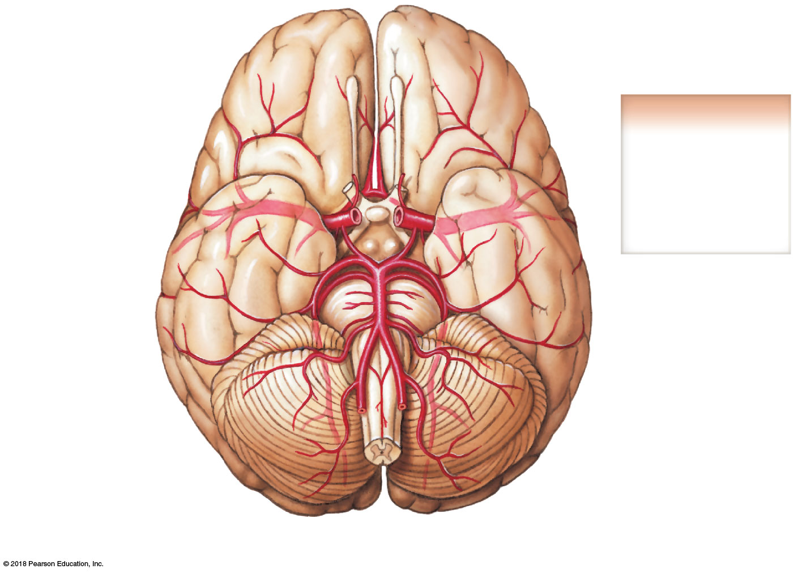
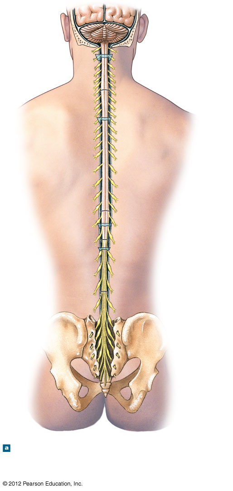
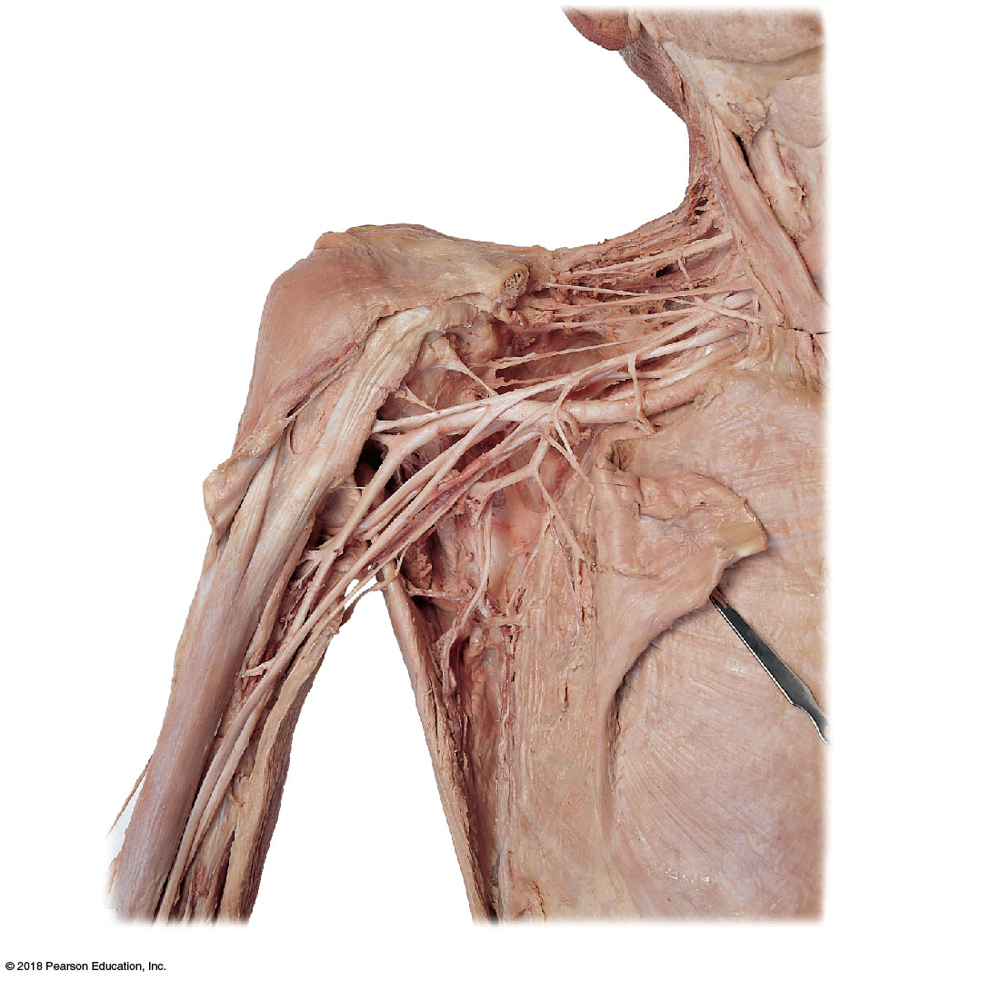

1 · Introduction to Anatomy & Anatomical Terminology
Instructional Objectives
- Compare and contrast the various anatomical imaginary planes of the body.
- Compare and contrast the anatomical position.
- Compare and contrast the movements of the body.
- Compare and contrast the cavities of the body.
- Recall anatomical terms.
- Describe the organs located in the various body cavities.
- Recall the levels of the structural organization of the body.
- Compare and contrast abdominal regions and quadrants.
1.1 · Objective 1 — Anatomical planes
Three standard imaginary planes section the body for imaging and dissection. A sagittal plane divides the body into left and right parts — a midsagittal (median) plane splits it into equal halves, while any off-center sagittal cut is parasagittal. A frontal (coronal) plane divides the body into anterior and posterior parts. A transverse (horizontal / axial / cross-sectional) plane divides the body into superior and inferior parts. An oblique plane cuts at any angle between these.
1.2 · Objective 2 — Anatomical position
All anatomical descriptions assume the body is in the anatomical position: standing upright, feet flat and directed forward, arms at the sides, palms facing forward (forearms supinated), with the head and eyes facing forward. This fixed reference frame means directional terms mean the same thing regardless of the body’s actual orientation. Contrast it with supine (lying face up) and prone (lying face down).
1.3 · Objective 3 — Movements of the body
Terms of movement describe joint actions: flexion (decreasing a joint angle) vs. extension (increasing it); abduction (moving away from midline) vs. adduction (moving toward it) and circumduction (a cone-shaped combination); medial vs. lateral rotation; forearm pronation (palm down) vs. supination (palm up); foot inversion (sole toward midline) vs. eversion (sole away) and dorsiflexion/plantarflexion; and elevation/depression, protraction/retraction, and opposition for structures like the scapula, mandible, and thumb.
1.4 · Objective 4 — Cavities of the body
Internal organs sit within two major cavities. The dorsal cavity subdivides into the cranial cavity and the continuous vertebral (spinal) canal. The ventral cavity subdivides into the thoracic cavity — itself split into paired pleural cavities and a central mediastinum (containing the heart within its own pericardial cavity) — and the abdominopelvic cavity (abdominal + pelvic portions, with no wall between them).
Each cavity is lined by a serous membrane: a parietal layer lines the wall and a visceral layer covers the organ, with a film of serous fluid between them reducing friction during breathing, heartbeat, and peristalsis. The three serous membranes are the pleura (lungs), pericardium (heart), and peritoneum (abdominal organs).
1.5 · Objective 5 — Anatomical terms
Terms of relationship describe position along the body’s axes: anterior/ventral (front) vs. posterior/dorsal (back); superior/cranial (toward head) vs. inferior/caudal (toward feet). Terms of laterality & depth add: medial (toward midline) vs. lateral (away); proximal (nearer the trunk/attachment) vs. distal (farther); superficial (nearer the surface) vs. deep; and ipsilateral (same side) vs. contralateral (opposite side). Remember that textbook descriptions represent the typical body plan — anatomical variation (extra bones, accessory muscles, unusual vessel branching) is common and clinically important.
1.6 · Objective 6 — Organs of the body cavities
| Cavity | Principal organs |
|---|---|
| Cranial cavity | Brain |
| Vertebral (spinal) canal | Spinal cord |
| Pleural cavities | Lungs |
| Mediastinum / pericardial cavity | Heart, great vessels, trachea, esophagus, thymus |
| Abdominal cavity | Stomach, small and large intestine, liver, gallbladder, spleen, pancreas, kidneys |
| Pelvic cavity | Urinary bladder, rectum, internal reproductive organs |
1.7 · Objective 7 — Levels of structural organization
The body is organized from broad to fine: chemical → cellular → tissue → organ → organ system → organism, each level building on the one below. Anatomy is also studied by approach: gross (macroscopic) vs. microscopic; and systemic anatomy (by functional system — integumentary, musculoskeletal, nervous, circulatory, respiratory, digestive, urinary, reproductive, endocrine) vs. regional anatomy (all structures within one area, e.g. the thorax, studied together).
1.8 · Objective 8 — Abdominal regions & quadrants
Two schemes localize abdominal findings. The nine regions (two horizontal, two vertical lines) are, top row: right hypochondriac, epigastric, left hypochondriac; middle row: right lumbar, umbilical, left lumbar; bottom row: right iliac (inguinal), hypogastric (pubic), left iliac (inguinal). The simpler four quadrants (one horizontal + one vertical line through the umbilicus) are the right upper (RUQ), left upper (LUQ), right lower (RLQ), and left lower (LLQ) quadrants — e.g., the appendix is RLQ and the spleen is LUQ.

2 · Histology
Instructional Objectives
- Classify epithelial tissue by cell shape and layering, and describe the distinguishing features and functions of the connective tissues.
- Compare cartilage, bone, muscle, and nervous tissue at the microscopic level.
- Describe the microscopic organization of compact and spongy bone, and the zones of the epiphyseal growth plate.
2.1 Epithelial & Connective Tissue IO 1
All body structures are built from just four primary tissue types: epithelial, connective, muscle, and nervous tissue. Epithelial tissue covers body surfaces, lines cavities/vessels/ducts, and forms glands, and it's classified along two independent axes — cell shape (squamous/flat, cuboidal/cube-shaped, columnar/tall-rectangular) and layering (simple = one layer, stratified = multiple layers, pseudostratified = one layer that appears layered because nuclei sit at different heights). Transitional epithelium is a special stratified type that stretches and recoils (lining the bladder). Functionally, epithelium provides protection (stratified squamous, skin), secretion (glandular epithelium), absorption (simple columnar with microvilli, intestine), and filtration (simple squamous, kidney/lung).
Connective tissue is defined by its abundant extracellular matrix — ground substance plus fibers (collagen fibers for tensile strength, elastic fibers for stretch/recoil, reticular fibers for a supportive mesh around organs) — produced mainly by fibroblasts. It falls into several categories: loose connective tissue (areolar — widespread packing/binding tissue; adipose — fat storage/insulation; reticular — the meshwork stroma of lymphoid organs), dense connective tissue (regular — parallel collagen fibers in tendons/ligaments, built for tension in one direction; irregular — collagen fibers running in multiple directions, found in the dermis and organ capsules; elastic — abundant elastic fibers, found in large arteries), supportive connective tissue (cartilage and bone), and fluid connective tissue (blood, with a liquid matrix — plasma).
2.2 Muscle, Nervous Tissue, Bone & Cartilage IO 2–3
Muscle tissue comes in three types: skeletal muscle (striated, voluntary, long multinucleate fibers), cardiac muscle (striated, involuntary, branching fibers joined end-to-end by intercalated discs), and smooth muscle (non-striated, involuntary, spindle-shaped uninucleate cells lining hollow organs and vessels). Nervous tissue is built from neurons (electrically excitable cells that transmit signals) and supporting neuroglia — covered in depth in Section 4.
Skeletal tissues form a spectrum of stiffness. Cartilage is avascular, resilient, and comes in three types: hyaline cartilage (the most common — smooth and glassy, covers articular bone surfaces and forms the respiratory tract's cartilaginous rings), fibrocartilage (dense collagen fibers give it the highest tensile strength of the three — found in intervertebral discs and the knee menisci), and elastic cartilage (abundant elastic fibers give it flexibility — found in the external ear and the epiglottis).
Bone tissue occurs in two arrangements: compact bone, dense and solid, forming the outer shell of every bone; and spongy (trabecular/cancellous) bone, a lattice of bony struts (trabeculae) with marrow-filled spaces between them, concentrated at the ends of long bones. At the microscopic level, compact bone is organized into cylindrical osteons (Haversian systems): a central Haversian canal (carrying blood vessels and nerves) is surrounded by concentric rings of matrix called lamellae, with mature bone cells (osteocytes) sitting in small cavities called lacunae between the lamellae, interconnected by tiny channels called canaliculi that let nutrients diffuse out to every osteocyte. Perforating (Volkmann's) canals run perpendicular to osteons, connecting them to each other and to the periosteum.

Long bones lengthen at the epiphyseal (growth) plate, a layer of hyaline cartilage between the diaphysis (shaft) and each epiphysis (bone end), organized into four zones: a resting zone of inactive chondrocytes anchoring the plate to the epiphysis, a proliferative zone of rapidly dividing chondrocytes that pushes the plate toward the diaphysis, a hypertrophic zone where chondrocytes enlarge and their matrix begins calcifying, and a calcification zone where chondrocytes die and the calcified cartilage is replaced by bone. The plate ossifies completely once growth is finished, leaving only a faint epiphyseal line. At the cellular level, all this tissue is built from cells whose basic organelles — nucleus (genetic material), mitochondria (ATP production), rough/smooth endoplasmic reticulum (protein/lipid synthesis), and Golgi apparatus (packaging/secretion) — carry out the same core functions in every tissue type.
3 · Brain and ANS
Instructional Objectives
- Describe the major divisions of the brain and their principal structures and functions.
- Describe the cranial meninges, the ventricular system, CSF circulation, and the blood-brain barrier.
- Compare the sympathetic, parasympathetic, and enteric divisions of the autonomic nervous system.
3.1 Cerebrum, Diencephalon, Brainstem & Cerebellum IO 1
The cerebrum is the largest brain division, split into left and right hemispheres joined by the corpus callosum (a thick white-matter bridge). Its surface is thrown into folds — gyri (ridges) separated by sulci (grooves) — which dramatically increase cortical surface area; the deep central sulcus and lateral sulcus are major landmarks dividing the cerebrum into four lobes: frontal (voluntary motor control, executive function, personality), parietal (somatosensory processing, spatial awareness), temporal (auditory processing, memory, language), and occipital (visual processing).
Within the cerebrum, gray matter (unmyelinated neuron cell bodies) forms the outer cerebral cortex, while white matter (myelinated axons) fills the interior, carrying signals between cortical areas and down to the rest of the CNS. Buried within this white matter are additional gray-matter islands, the basal nuclei (caudate, putamen, globus pallidus), which help modulate and smooth voluntary movement. The limbic system — including the hippocampus (memory consolidation), amygdala (emotional processing, especially fear), and cingulate gyrus — forms a functional loop spanning the cerebrum and diencephalon that governs emotion and memory.

Below the cerebrum, the diencephalon contains the thalamus (a relay station that processes and forwards nearly all sensory information — except smell — to the cerebral cortex), the hypothalamus (the master regulator of homeostasis: temperature, hunger, thirst, circadian rhythms, and the master controller of the pituitary gland), and the epithalamus (containing the pineal gland, which secretes melatonin). The brainstem connects the cerebrum to the spinal cord in three parts: the midbrain (mesencephalon) (contains the cerebral peduncles carrying descending motor fibers, and the superior/inferior colliculi for visual/auditory reflexes), the pons (relays signals between the cerebrum and cerebellum, and contributes to respiratory rhythm), and the medulla oblongata (houses cardiovascular and respiratory control centers, and is where most descending motor fibers cross to the opposite side at the decussation of the pyramids). The cerebellum, tucked beneath the occipital lobe, coordinates fine motor movement, posture, and balance by comparing intended movement to actual movement.
3.2 Meninges, Ventricles, CSF & Blood-Brain Barrier IO 2
Three connective-tissue layers, the cranial meninges, wrap the brain: the tough outer dura mater (with periosteal and meningeal layers that separate to form the dural venous sinuses, and folds — the falx cerebri between the hemispheres and the tentorium cerebelli between the cerebrum and cerebellum — that partition the cranial cavity), the middle arachnoid mater (web-like, defining the fluid-filled subarachnoid space beneath it), and the innermost pia mater (a delicate layer that closely follows every gyrus and sulcus, directly adherent to brain tissue).
The brain's four interconnected fluid-filled cavities, the ventricles, form the path of cerebrospinal fluid (CSF) circulation: paired lateral ventricles (one per hemisphere) drain through the interventricular foramina (of Monro) into the single midline third ventricle, which connects via the narrow cerebral aqueduct (running through the midbrain) to the fourth ventricle, which in turn is continuous with the spinal cord's central canal and drains into the subarachnoid space. CSF is produced by the choroid plexus within each ventricle, cushions the brain and spinal cord against impact, and is ultimately reabsorbed into the dural venous sinuses through arachnoid granulations that project through the dura. The blood-brain barrier tightly regulates what reaches brain tissue: capillary endothelial cells joined by extensive tight junctions, reinforced by surrounding astrocyte end-feet, block most large or hydrophilic molecules while allowing small lipid-soluble molecules (like O2 and CO2) to cross freely.
3.3 Autonomic Nervous System IO 3
The autonomic nervous system (ANS) controls involuntary effectors — smooth muscle, cardiac muscle, and glands — through a two-neuron chain: a preganglionic neuron (cell body in the CNS) synapses on a postganglionic neuron (cell body in a peripheral ganglion), which then reaches the target organ. The sympathetic division ("fight or flight") has a thoracolumbar outflow (preganglionic cell bodies in the T1–L2 spinal cord segments), with short preganglionic fibers synapsing quickly in a chain of ganglia running alongside the vertebral column, then long postganglionic fibers traveling out to targets — a design that allows rapid, widespread activation. The parasympathetic division ("rest and digest") has a craniosacral outflow (preganglionic cell bodies in select cranial nerve nuclei and the S2–S4 spinal cord segments), with long preganglionic fibers traveling nearly all the way to the target organ before synapsing on short postganglionic fibers in ganglia embedded within or very near the organ wall — producing more localized, specific effects.
The gastrointestinal tract has its own semi-independent enteric nervous system, organized into the myenteric plexus (between muscle layers, controls motility) and the submucosal plexus (regulates secretion and local blood flow); it can coordinate peristalsis and secretion on its own, but sympathetic input generally inhibits GI activity (rerouting blood flow away from digestion) while parasympathetic (vagal) input stimulates it.
4 · Nervous Tissue & Cerebral Blood Flow
Instructional Objectives
- Describe the structure of a neuron and classify neurons by structure and by function.
- Identify the types and functions of CNS and PNS neuroglia, and describe the process of myelination.
- Trace the arterial supply to the brain (including the cerebral arterial circle) and the venous drainage of the cranium.
4.1 Neurons & Neuroglia IO 1–2
The nervous system divides into the central nervous system (CNS) — brain and spinal cord — and the peripheral nervous system (PNS) — all the nerves and ganglia outside the CNS. Its functional cell, the neuron, has a cell body (soma) containing the nucleus, branching dendrites that receive incoming signals, and a single axon (arising from the axon hillock, the neuron's action-potential trigger zone) that conducts an outgoing signal to axon terminals, often insulated along the way by a myelin sheath.
Neurons are classified functionally as sensory (afferent) neurons (carry signals toward the CNS), motor (efferent) neurons (carry signals away from the CNS to effectors), or interneurons (entirely within the CNS, integrating information between sensory input and motor output). Structurally, neurons are multipolar (one axon, many dendrites — most CNS neurons and motor neurons), bipolar (one axon, one dendrite — found in some special sensory pathways like the retina), or unipolar (pseudounipolar) (a single process splits into a peripheral and central branch — typical of sensory neurons whose cell bodies sit in dorsal root ganglia).
Neurons are supported by neuroglia, which differ between the CNS and PNS. In the CNS: astrocytes (the most abundant type — support neurons, help form the blood-brain barrier, regulate the extracellular chemical environment), oligodendrocytes (myelinate CNS axons — a single oligodendrocyte extends processes that wrap segments of several different axons), microglia (the CNS's resident immune cells, clearing debris and pathogens), and ependymal cells (line the ventricles, help produce/circulate CSF). In the PNS: Schwann cells (myelinate PNS axons — unlike an oligodendrocyte, a single Schwann cell wraps just one segment of a single axon) and satellite cells (support neuron cell bodies within peripheral ganglia). Wherever myelin is present, it's interrupted at regular gaps called nodes of Ranvier, allowing the action potential to "jump" node to node — saltatory conduction — which conducts signals far faster than continuous conduction along an unmyelinated axon. At a synapse, the presynaptic terminal releases neurotransmitter into the synaptic cleft, which binds receptors on the postsynaptic membrane to excite or inhibit the next cell.
4.2 Arterial Supply & Venous Drainage of the CNS IO 3
The brain receives blood from two paired sources that together form a protective loop of collateral circulation. The internal carotid arteries supply the anterior circulation (most of the cerebrum), while the paired vertebral arteries ascend through the cervical vertebrae's transverse foramina and join at the base of the skull to form the single basilar artery, supplying the posterior circulation (brainstem, cerebellum, and occipital lobes). These two systems are linked together at the base of the brain by the cerebral arterial circle (Circle of Willis): the internal carotids give rise to the anterior cerebral arteries (joined to each other by a short anterior communicating artery) and the middle cerebral arteries (the largest branches, supplying most of the lateral cerebral surface), while the basilar artery terminates in paired posterior cerebral arteries, each linked forward to the corresponding internal carotid by a posterior communicating artery. This ring of connections means that if one feeding vessel narrows or occludes gradually, flow can often be redirected around the circle to preserve perfusion.

Venous drainage follows a very different route from the arterial supply: superficial and deep cerebral veins empty not into simple paired veins but into the dural venous sinuses — endothelium-lined channels running between the two layers of dura mater, including the superior sagittal sinus (running along the top of the falx cerebri), inferior sagittal sinus, straight sinus, and the paired transverse and sigmoid sinuses, which ultimately drain into the internal jugular veins to return blood to the heart.
5 · Spinal Cord and Sensory Receptors
Instructional Objectives
- Describe the gross and sectional anatomy of the spinal cord, including its enlargements, terminal structures, and gray/white matter organization.
- Identify the major ascending and descending spinal cord tracts and their general functions.
- Classify the general senses and describe the structure and function of the major sensory receptor types.
5.1 Spinal Cord Anatomy & Tracts IO 1–2
The spinal cord runs from the foramen magnum down to about the L1–L2 vertebral level, where it tapers into the conus medullaris; below that, a thin fibrous strand called the filum terminale anchors the cord to the coccyx, surrounded by a bundle of lumbar and sacral nerve roots descending to their exit points — collectively the cauda equina ("horse's tail"), named for its resemblance. The cord is thicker at two points where it innervates the limbs: the cervical enlargement (upper limb) and the lumbosacral enlargement (lower limb).

In cross-section, the spinal cord's gray matter forms a butterfly/H-shape: dorsal (posterior) horns receive incoming sensory input, ventral (anterior) horns contain motor neuron cell bodies, and — only at spinal levels T1–L2 — small lateral horns contain the intermediolateral gray horn, the location of sympathetic preganglionic neuron cell bodies. These sympathetic fibers exit and rejoin the spinal nerve via the rami communicantes: a white ramus (myelinated preganglionic fibers heading to a sympathetic chain ganglion) and a gray ramus (unmyelinated postganglionic fibers rejoining the spinal nerve for distribution to the body wall). Surrounding the gray matter, white matter is organized into funiculi (dorsal, lateral, and ventral columns) carrying bundles of axons — tracts — up and down the cord.
Ascending (sensory) tracts include the dorsal columns (fasciculus gracilis and fasciculus cuneatus — carry fine touch, vibration, and conscious proprioception, staying ipsilateral until they reach the medulla), the spinothalamic tracts (carry pain, temperature, and crude touch, crossing to the opposite side near their level of entry), and the spinocerebellar tracts (carry unconscious proprioceptive information to the cerebellum for movement coordination). The major descending (motor) tracts are the corticospinal tracts, which carry voluntary motor commands from the cerebral cortex — the lateral corticospinal tract (the majority, having already crossed at the medulla's pyramidal decussation) controls limb muscles, while the smaller anterior corticospinal tract (crossing at its level of exit) controls axial/trunk muscles. The cord's blood supply comes from a single anterior spinal artery and paired posterior spinal arteries, reinforced at intervals by segmental radicular arteries (the largest of which, the artery of Adamkiewicz, is clinically important in aortic surgery), with corresponding venous and lymphatic drainage running alongside.
5.2 General Senses & Sensory Receptors IO 3
The general senses — touch, pressure, temperature, pain, and proprioception — are detected by receptors distributed throughout the body (as opposed to the special senses, each with a dedicated sensory organ). Receptors show specificity: each type responds preferentially to one stimulus modality, and general senses are classified accordingly into mechanoreceptors, thermoreceptors, nociceptors, and chemoreceptors.
Mechanoreceptors respond to physical deformation of the tissue around them: Meissner corpuscles (light touch, fine discrimination — abundant in fingertips), Pacinian corpuscles (deep pressure and vibration — found deep in the dermis/hypodermis), Merkel discs (sustained light touch and pressure), and Ruffini endings (skin stretch). Thermoreceptors are free nerve endings tuned separately to warming or cooling. Nociceptors — mostly free nerve endings — detect tissue damage and generate the sensation of pain. Chemoreceptors detect chemical concentration changes: internally, they monitor blood gas and pH levels (e.g., in the carotid and aortic bodies), and the special senses of olfaction (smell, via the olfactory epithelium high in the nasal cavity, detected by CN I) and gustation (taste, via taste buds on the tongue, detected mainly by CN VII, IX, and X) are also fundamentally chemoreceptor-based.
Once a stimulus generates a signal, the nervous system must interpret it: which receptor type fired and where it's located together determine the sensation's quality and location (the "labeled line" principle), with final conscious interpretation occurring in the primary somatosensory cortex of the parietal lobe.
6 · Peripheral and Cranial Nerves
Instructional Objectives
- Describe the organization of the peripheral nervous system, spinal nerves, and the major nerve plexuses.
- Describe the components of the reflex arc and distinguish monosynaptic from polysynaptic reflexes.
- Identify each of the twelve cranial nerves, the foramen each passes through, and its principal function(s).
6.1 Spinal Nerves, Plexuses & Reflexes IO 1–2
The PNS carries 31 pairs of spinal nerves (8 cervical, 12 thoracic, 5 lumbar, 5 sacral, 1 coccygeal), each formed by the union of a dorsal (posterior) root — carrying sensory fibers, with cell bodies in the dorsal root ganglion — and a ventral (anterior) root — carrying motor fibers. Immediately after exiting the vertebral column, every spinal nerve splits into a dorsal ramus (innervating the deep back muscles and overlying skin) and a much larger ventral ramus (innervating the anterolateral body wall and limbs, either directly as intercostal nerves in the thorax or by joining a nerve plexus elsewhere).
Ventral rami from adjacent spinal levels interweave into four major plexuses: the cervical plexus (C1–C4, including the phrenic nerve to the diaphragm), the brachial plexus (C5–T1, reorganizing through roots, trunks, divisions, and cords into the major nerves of the upper limb — median, ulnar, radial, musculocutaneous, and axillary), the lumbar plexus (L1–L4, giving rise to the femoral and obturator nerves), and the sacral plexus (L4–S4, giving rise to the sciatic nerve, the body's largest); the lumbar and sacral plexuses are often considered together as the lumbosacral plexus because their roots overlap and interconnect.

Voluntary motor commands originate as an upper motor neuron signal from the cortex, which synapses on a lower motor neuron (in the brainstem or spinal cord ventral horn) that directly innervates skeletal muscle. Reflexes are rapid, stereotyped, involuntary responses that bypass conscious processing, built from a reflex arc: a receptor detects the stimulus, a sensory neuron carries the signal to an integration center (typically the spinal cord), which connects — directly or through interneurons — to a motor neuron that activates an effector. A monosynaptic reflex (like the patellar/stretch reflex) has the sensory neuron synapse directly onto the motor neuron with no interneuron, making it the fastest reflex type; a polysynaptic reflex (like the withdrawal reflex from a painful stimulus) involves one or more interneurons and can also recruit the opposite limb.
6.2 The Twelve Cranial Nerves IO 3
Twelve pairs of cranial nerves arise directly from the brain (rather than the spinal cord) and pass through specific skull foramina to reach their targets. A few carry extra weight clinically: CN III (oculomotor) carries parasympathetic fibers (via the ciliary ganglion) that constrict the pupil and adjust the lens for near vision, in addition to its motor supply to four of the six extra-ocular muscles and the levator palpebrae superioris. CN IX (glossopharyngeal) gives off a carotid sinus/carotid body branch carrying baroreceptor and chemoreceptor information used in the reflex regulation of blood pressure and breathing, in addition to its sensory/taste supply to the posterior tongue and motor supply to the stylopharyngeus.
| Nerve | Foramen | Principal function |
|---|---|---|
| I — Olfactory | Cribriform plate (ethmoid) | Smell |
| II — Optic | Optic canal | Vision |
| III — Oculomotor | Superior orbital fissure | Most eye movements, eyelid elevation, pupillary constriction & lens accommodation (parasympathetic) |
| IV — Trochlear | Superior orbital fissure | Superior oblique (eye movement) |
| V — Trigeminal | V1 & V2: superior orbital fissure/foramen rotundum; V3: foramen ovale | Facial sensation; muscles of mastication (V3 only) |
| VI — Abducens | Superior orbital fissure | Lateral rectus (eye abduction) |
| VII — Facial | Internal acoustic meatus → stylomastoid foramen | Facial expression; taste (anterior 2/3 tongue); lacrimal/salivary glands |
| VIII — Vestibulocochlear | Internal acoustic meatus | Hearing & balance |
| IX — Glossopharyngeal | Jugular foramen | Taste/sensation (posterior tongue, pharynx); stylopharyngeus; carotid body/sinus reflex input |
| X — Vagus | Jugular foramen | Parasympathetic supply to thoracic/abdominal viscera; pharyngeal/laryngeal muscles |
| XI — Accessory | Jugular foramen | Sternocleidomastoid & trapezius |
| XII — Hypoglossal | Hypoglossal canal | Tongue muscles |